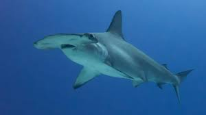
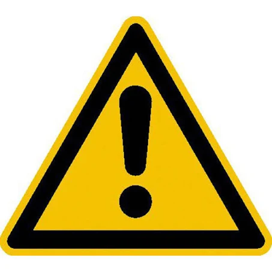
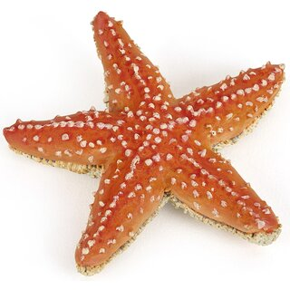

Die Welt der Fische
Was ist ein Fisch?
Der Fisch ist eine majestätische Kreatur, der seine Existenz seit Jahrhunderten behaupten kann. Dies liegt unter anderem an seiner Anpassungsfähigkeit, der Fisch kann im Wasser, Meer, See und Ozean überleben. Zudem können sie selbst unter Extrembedingungen leben wie in einem Aquarium, in deiner Badewanne und selbst in der Kanalisation.ja ist das denn zu fassen?
Wie viele Fischarten gibt es?
Diese Frage ist nicht leicht zu beantworten, da Fische trotz des Faktes, dass sie seit Millionen Jahren das Meer bevölkern, sich dennoch dagegen entschieden haben, ein Einwohnermeldeamt zu gründen. Experten schätzen die Zahl der Fische auf circa 30.000 ArtenWissenswertes
die Aufteilung ist 30% zu 70%


Der Größte Fisch der Welt
Der größte Fisch der Welt ist das Walhai-Weichen mit durchschnittlich 14,5 Metern, wohingegen die Männchen nur acht bis nein Meter erreichen. Das größte Meerestier ist jedoch ein Säugetier und kein Fisch. Der Blauwal mit einer Länge von 33 Metern sichert sich sogar den Platz als größtes Tier der Welt.Der außergewöhnlichste Fisch
Der Blobfisch lebt in einer Tiefe von 600 bis 2.800 m. Dort ist stockfinster und der Druck ist so groß, dass ihn kein Mensch überleben würde. Der Körper der Blobfische besteht aus einer glibberigen Masse, um dem besonders hohen Druck in der Tiefsee standhalten zu können. Aber wenn er von Tiefseefischern gefangen wird, holen sie ihn von ganz unten nach ganz nach oben. Je näher er der Wasseroberfläche kommt, desto geringer ist der Druck, der auf seinen Körper lastet. Dadurch bläst er sich zu einem unförmigen Ballon auf. Überleben kann er das nicht.

Lass den Seestern tanzen
